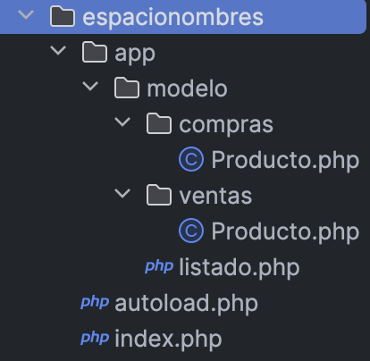
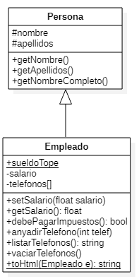

PHP sigue un paradigma de programación orientada a objetos (POO) basada en clases.
Un clase es un plantilla que define las propiedades y métodos para poder crear objetos. De este manera, un objeto es una instancia de una clase.
Tanto las propiedades como los métodos se definen con una visibilidad (quien puede acceder)
Privado - private: Sólo puede acceder la propia clase.
Protegido - protected: Sólo puede acceder la propia clase o sus descendientes.
Público - public: Puede acceder cualquier otra clase.
Pero a diferencia de otros lenguajes como Java, no podemos indicar el nivel de visibilidad de la clase. En PHP, todas las clases son públicas por definición.
Para declarar una clase, se utiliza la palabra clave class seguido del nombre de la clase. Para instanciar un objeto a partir de la clase, se utiliza new:
<?phpclassNombreClase{// propiedades // y métodos }$ob=newNombreClase();
Clases con mayúscula
Todas las clases empiezan por letra mayúscula.
Cuando un proyecto crece, es normal modelar las clases mediante UML. La clases se representan mediante un cuadrado, separando el nombre, de las propiedades y los métodos:
Una vez que hemos creado un objeto, se utiliza el operador -> para acceder a una propiedad o un método:
$objeto->propiedad;$objeto->método(parámetros);
Si desde dentro de la clase, queremos acceder a una propiedad o método de la misma clase, utilizaremos la referencia $this;
$this->propiedad;$this->método(parámetros);
Así pues, como ejemplo, codificaríamos una persona en el fichero Persona.php como:
<?phpclassPersona {privatestring$nombre;publicfunctionsetNombre(string$nom){$this->nombre=$nom;}publicfunctionimprimir(){echo$this->nombre;echo'<br>';}}$bruno =newPersona();// creamos un objeto$bruno->setNombre("Bruno Díaz");$bruno->imprimir();
Aunque se pueden declarar varias clases en el mismo archivo, es una mala práctica. Así pues, cada fichero contedrá una sola clase, y se nombrará con el nombre de la clase.
Constantes como atributos
Es posible definir una constante como atributo de una clase, pero ojo, que sólo es posible definir su tipo de dato a partir de PHP 8.3.
<?phpclassProducto {publicconstfloatIVA=0.21;// Sin "float" para versiones < PHP 8.3privatestring$nombre;privatestring$precio;// ...publicfunctiongetPrecioConIva():float {return$this->precio=$nom*($this->precio*self::IVA);}}// MAIN...echoProducto::IVA;
El constructor de los objetos se define mediante el método mágico __construct.
Puede o no tener parámetros, pero sólo puede haber un único constructor.
Una de las grandes novedades que ofrece PHP 8 es la simplificación de los constructores con parámetros, lo que se conoce como promoción de las propiedades del constructor.
Para ello, en vez de tener que declarar las propiedades como privadas o protegidas, y luego dentro del constructor tener que asignar los parámetros a estás propiedades, el propio constructor promociona las propiedades.
Veámoslo mejor con un ejemplo. Imaginemos una clase Punto donde queramos almacenar sus coordenadas:
Para inicializar las propiedades directamente en los parámetros del constructor, estas han de ser literales como números, cadenas, booleanos, null, o arrays simples. Cualquier otra cosa que implique lógica o llamadas a funciones debe ir en el cuerpo del constructor, como por ejemplo instanciar un objeto de otra clase.
El orden importa
A la hora de codificar el orden de los elementos debe ser:
<?phpdeclare(strict_types=1);classNombreClase{// propiedades// constructor// getters - setters// resto de métodos}?>
Son aquellas que tienen propiedades y/o métodos estáticos (también se conocen como de clase, por que su valor se comparte entre todas las instancias de la misma clase).
Se declaran con static y se referencian con ::.
Si queremos acceder a un método o atributo estático, o a una constante, se antepone el nombre de la clase: Producto::nuevoProducto() o Producto::$numProductos.
Si desde dentro de la clase queremos llamar a un método o atributo estático propio, o a una constante, se utiliza la referencia self: self::nuevoProducto o self::$numProductos.
También podemos tener clases normales que tengan alguna propiedad estática:
<?phpclassProducto {constIVA =0.23;privatestatic$numProductos =0;private$codigo;publicfunction__construct(string $cod){self::$numProductos++;$this->codigo =$cod;}publicfunctionmostrarResumen():string {return"El producto ".$this->codigo." es el número ".self::$numProductos;}}$prod1 =newProducto("PS5");$prod2 =newProducto("XBOX Series X");$prod3 =newProducto("Nintendo Switch");echo$prod3->mostrarResumen();
Al trabajar con clases y objetos, existen un conjunto de funciones ya definidas por el lenguaje que permiten obtener información sobre los objetos:
instanceof: permite comprobar si un objeto es de una determinada clase
get_class: devuelve el nombre de la clase
get_declared_class: devuelve un array con los nombres de las clases definidas en el script actual
class_alias: crea un alias
class_exists / method_exists / property_exists: true si la clase / método / propiedad está definida
get_class_methods / get_class_vars / get_object_vars: Devuelve un array con los nombres de los métodos / propiedades de una clase / propiedades de un objeto que son accesibles desde dónde se hace la llamada.
Un ejemplo de estas funciones puede ser el siguiente:
<?php$p =newProducto("PS5");if($p instanceof Producto){echo"Es un producto";echo"La clase es ".get_class($p);class_alias("Producto","Articulo");$c =newArticulo("Nintendo Switch");echo"Un articulo es un ".get_class($c);print_r(get_class_methods("Producto"));print_r(get_class_vars("Producto"));print_r(get_object_vars($p));if(method_exists($p,"mostrarResumen")){$p->mostrarResumen();}}
Clonado
Al asignar dos objetos no se copian, se crea una nueva referencia. Si queremos una copia, hay que clonarlo mediante el método clone(object) : object
Si queremos modificar el clonado por defecto, hay que definir el método mágico __clone() que se llamará después de copiar todas las propiedades.
PHP soporta herencia simple, de manera que una clase solo puede heredar de otra, no de dos clases a la vez. Para ello se utiliza la palabra clave extends. Si queremos que la clase A hereda de la clase B haremos:
class A extends B
El hijo hereda los atributos y métodos públicos y protegidos.
Cada clase en un archivo
Como ya hemos comentado, deberíamos colocar cada clase en un archivo diferente para posteriormente utilizarlo mediante include. En los siguientes ejemplos los hemos colocado juntos para facilitar su legibilidad.
Por ejemplo, tenemos una clase Producto y una Tv que hereda de Producto:
Podemos utilizar las siguientes funciones para averiguar si hay relación entre dos clases:
get_parent_class(object): string
is_subclass_of(object, string): bool
<?php$t=newTv();$t->codigo=33;if($tinstanceofProducto){echo$t->mostrarResumen();}$padre=get_parent_class($t);echo"<br>La clase padre es: ".$padre;$objetoPadre=new$padre;echo$objetoPadre->mostrarResumen();if(is_subclass_of($t,'Producto')){echo"<br>Soy un hijo de Producto";}
Podemos crear métodos en los hijos con el mismo nombre que el padre, cambiando su comportamiento.
Para invocar a los métodos del padre -> parent::nombreMetodo()
<?phpclassTvextendsProducto{public$pulgadas;public$tecnologia;publicfunctionmostrarResumen(){parent::mostrarResumen();echo"<p>TV ".$this->tecnologia." de ".$this->pulgadas."</p>";}}
En los hijos no se crea ningún constructor de manera automática. Por lo que si no lo hay, se invoca automáticamente al del padre. En cambio, si lo definimos en el hijo, hemos de invocar al del padre de manera explícita.
<?phpclassProducto{publicstring$codigo;publicfunction__construct(string$codigo){$this->codigo=$codigo;}publicfunctionmostrarResumen(){echo"<p>Prod:".$this->codigo."</p>";}}classTvextendsProducto{public$pulgadas;public$tecnologia;publicfunction__construct(string $codigo,int $pulgadas,string $tecnologia){parent::__construct($codigo);$this->pulgadas =$pulgadas;$this->tecnologia =$tecnologia;}publicfunctionmostrarResumen(){parent::mostrarResumen();echo"<p>TV ".$this->tecnologia." de ".$this->pulgadas."</p>";}}
<?phpclassProducto{publicfunction__construct(privatestring$codigo){}publicfunctionmostrarResumen(){echo"<p>Prod:".$this->codigo."</p>";}}classTvextendsProducto{publicfunction__construct(string $codigo,privateint $pulgadas,privatestring $tecnologia){parent::__construct($codigo);}publicfunctionmostrarResumen(){parent::mostrarResumen();echo"<p>TV ".$this->tecnologia." de ".$this->pulgadas."</p>";}}
Las clases abstractas obligan a heredar de una clase, ya que no se permite su instanciación. Se define mediante abstract class NombreClase {.
Una clase abstracta puede contener propiedades y métodos no-abstractos, y/o métodos abstractos.
Cuando una clase hereda de una clase abstracta, obligatoriamente debe implementar los métodos que tiene el padre marcados como abstractos.
<?phpclassTvextendsProducto{public$pulgadas;public$tecnologia;publicfunctionmostrarResumen(){//obligado a implementarloecho"<p>Código ".$this->getCodigo()."</p>";echo"<p>TV ".$this->tecnologia." de ".$this->pulgadas."</p>";}}$t=newTv();echo$t->getCodigo();
Permite definir un contrato con las firmas de los métodos a cumplir. Así pues, sólo contiene declaraciones de funciones y todas deben ser públicas.
Se declaran con la palabra clave interface y luego las clases que cumplan el contrato lo realizan mediante la palabra clave implements.
<?phpinterfaceNombreable{// declaración de funciones}classNombreClaseimplementsNombreInterfaz{// código de la clase
Se permite la herencia de interfaces. Además, una clase puede implementar varios interfaces (en este caso, sí soporta la herecia múltiple, pero sólo de interfaces).
<?phpinterfaceMostrable {publicfunctionmostrarResumen():string;}interfaceMostrableTodo extends Mostrable {publicfunctionmostrarTodo():string;}interfaceFacturable {publicfunctiongenerarFactura():string;}classProducto implements MostrableTodo,Facturable {// Implementaciones de los métodos// Obligatoriamente deberá implementar public function mostrarResumen, mostrarTodo y generarFactura}
Los traits son un mecanismo de reutilización de código en un lenguaje de herencia simple como PHP.
Un trait es similar a una clase, pero solo sirve para agrupar funcionalidades que puede utilizar la clase que la use. No es posible instanciar un Trait en sí mismo.
Una clase puede usar más de un trait. Se indica en su cuerpo mediante use Trait1, Trait2, Trait3;.
Ejemplo:
<?phptraitLogger{publicstring$logLevel="INFO";publicfunctionlog($message){echo$this->logLevel." Logging: ".$message."\n";}}classUser{useLogger;// Se incorpora el trait}classProduct{useLogger;// Se incorpora el mismo trait}$user=newUser();$user->log("User created");// El método del trait ahora está disponible en la clase$product=newProduct();$product->logLevel="ALERT";$product->log("Product updated");// Y también en esta clase
En la clase puedes usar las propiedades del trait como si fueran propias: leer, modificar y acceder de forma similar a como lo hace con la herencia:
public: accesible desde cualquier sitio.
protected: accesible desde dentro de la clase que usa el trait.
private: sólo accesible desde dentro del trait.
El uso de trait está aconsejado para compartir métodos más que propiedades.
Comparación con las interfaces
El trait inyecta métodos ya implementados y propiedades en la clase que lo use. A diferencia de la interfaz, que obliga a definir los métodos en la clase que la implemente.
Sigue el planteamiento de la programación funcional, y también se conoce como method chaining. Plantea que sobre un objeto se realizan varias llamadas.
Todas las clases PHP ofrecen un conjunto de métodos, también conocidos como magic methods que se pueden sobreescribir para sustituir su comportamiento. Algunos de ellos ya los hemos utilizado.
__construct() → Se llama automáticamente la crear una instancia de la clase con new.
__destruct() → Se invoca al perder la referencia. Se utiliza para cerrar una conexión a la BD, cerrar un fichero, ...
__toString() → Representación del objeto como cadena. Es decir, cuando hacemos echo $objeto se ejecuta automáticamente este método.
__get(propiedad), __set(propiedad, valor) → Se ejecuta su código al acceder/modificar propiedades inaccesibles (protegidas o privadas) o inexistentes. Es más legible/mantenible codificar los getter/setter.
__isset(propiedad), __unset(propiedad) → Se invocan cuando se ejecuta isset o unset sobre propiedades inaccesibles o inexistentes.
__call(), __callStatic() → Se ejecutan al llamar a un método inaccesible en el contexto de objeto o estático respectivamente.
__sleep(), __wakeup() → Se ejecutan antes de serializar un objeto (serialize) o se reconstruye (unserialize), y se utilizan para definir qué propiedades se serializan.
Desde PHP 5.3 y también conocidos como namespaces, permiten organizar las clases/interfaces, funciones y/o constantes de forma similar a los paquetes en Java. Están basados en el concepto similar a la organización de archivos en directorios que hacen los sistemas operativos: Sólo puede haber un archivo con el mismo nombre en un directorio y el acceso es ordenado estableciendo la ruta, evitando así conflictos de nombres.
Hoy en día con la cantidad de librerías de terceros que se importan en los proyectos, no es nada raro que en nuestro código necesitemos utilizar 2 clases que se llaman igual. Para ilustrar este concepto, supón que tenemos el siguiente código:
<?php// index.phpinclude_once"app/modelo/compras/Producto.php";include_once"app/modelo/ventas/Producto.php";// No funciona, hay solapamiento de recursos$producto=newProducto("Teclado Logitech MX Keys",56.99);$producto->compra();
Como habrás comprobado, el intérprete de PHP no sabe qué clase Producto utilizar y no funciona.
¿Cómo se resuelve esta ambigüedad? Lo has adivinado, usando espacios de nombres.
Se declaran en la primera línea mediante la palabra clave namespace seguida del nombre del espacio de nombres asignado (cada subnivel se separa con la barra invertida \):
<?php// Declaración de su namespace al principio del archivo, antes de cualquier salida.namespaceApp\Modelo\Compras;// Definición de constante y función fuera de la clase para// usos didácticos de los namespacesconstIVA=0.1;functionprecioConIva(Producto$producto):float{return$producto->getPrecio()*(1+IVA);}classProducto{privatestring$nombre;privatefloat$precio;publicfunction__construct(string$nombre,float$precio){$this->nombre=$nombre;$this->precio=$precio;}publicfunctiongetPrecio():float{return$this->precio;}publicfunctioncompra():void{echo"<p>Compra del producto $this->nombre</p>";}}
<?php// Declaración de su namespace al principio del archivo, antes de cualquier salida.namespaceApp\Modelo\Ventas;// Definición de constante y función fuera de la clase para// usos didácticos de los namespacesconstIVA=0.21;functionprecioConIva(Producto$producto):float{return$producto->getPrecio()*(1+IVA);}classProducto{privatestring$nombre;privatefloat$precio;publicfunction__construct(string$nombre,float$precio){$this->nombre=$nombre;$this->precio=$precio;}publicfunctiongetPrecio():float{return$this->precio;}}
Recomendación
Un sólo namespace por archivo y crear una estructura de carpetas respectando los niveles/subniveles (igual que se hace en Java).
Para referenciar a un recurso que contiene un namespace, primero hemos de tenerlo disponible haciendo uso de include o require, igual que hasta ahora.
<?php// index.php en la raíz del proyecto, al nivel de appinclude_once"app/modelo/compras/Producto.php";include_once"app/modelo/ventas/Producto.php";$producto1=new\App\Modelo\Compras\Producto("Teclado Logitech MX Keys",84.99);$producto1->compra();$producto2=new\App\Modelo\Ventas\Producto("Ratón Logitech MX Master 3S",56.99);$producto2->venta();
Existen tres tipos de acceso:
totalmente cualificado: \rutaAbsoluta\recurso
cualificado: rutaRelativa\recurso → no hace falta poner el namespace completo
sin cualificar: recurso
<?php// listado.php en app/modelo/namespaceApp\Modelo;include_once"ventas/Producto.php";$producto2=newVentas\Producto("Ratón Logitech MX Master 3S",56.99);$producto2->venta();// Totalmente cualificado --> absoluta desde raíz// Cualificado --> relativo al namespace actual// No cualificado --> relativo al namespace actualecho\App\Modelo\Ventas\IVA;echoVentas\IVA;echoIVA;// No funciona: no existe IVA en el namespace actualecho\App\Modelo\Ventas\precioConIva($producto2);echoVentas\precioConIva($producto2);echoprecioConIva($producto2);// No funciona: no existe precioConIva en el namespace actual$p1=new\App\Modelo\Ventas\Producto("Producto...",11.99);$p2=newVentas\Producto("Producto...",11.99);$p3=newProducto("Producto...",11.99);// No funciona: no existe Producto en el namespace actual
Para evitar la referencia cualificada podemos declarar el uso mediante use (similar a hacer import en Java). Se hace en la cabecera, tras el namespace:
Los tipos posibles son:
use const nombreCualificadoConstante
use function nombreCualificadoFuncion
use nombreCualificadoClase
use nombreCualificadoClase as NuevoNombre // para renombrar elementos
Por ejemplo, si queremos utilizar la clase \App\Modelo\Ventas\Producto desde un recurso que se encuentra en la raíz, por ejemplo en index.php, haríamos:
<?phpinclude_once"app/modelo/compras/Producto.php";include_once"app/modelo/ventas/Producto.php";useconst\App\Modelo\Ventas\IVA;usefunction\App\Modelo\Ventas\precioConIva;use\App\Modelo\Ventas\ProductoasProductoVenta;// Hay que renombrar la clase Productouse\App\Modelo\Compras\ProductoasProductoCompra;// Hay que renombrar la clase Producto$producto1=newProductoCompra("Teclado Logitech MX Keys",84.99);$producto1->compra();$producto2=newProductoVenta("Ratón Logitech MX Master 3S",56.99);$producto2->venta();echoIVA;echoprecioConIva($producto2);
To use or not to use
En resumen, use permite acceder sin cualificar a recursos que están en otro namespace. Si estamos en el mismo espacio de nombre, no necesitamos use.
Todo proyecto, conforme crece, necesita organizar su código fuente. Se plantea una organización en la que los archivos que interactuan con el navegador se colocan en la raíz, y las clases que definamos van dentro de un namespace (y dentro de su propia carpeta src o app).
Organización, includes y usos
Colocaremos cada recurso en un fichero aparte.
En la primera línea indicaremos su namespace (si no está en el raíz).
Si utilizamos otros recursos, haremos un include_once de esos recursos (clases, interfaces, etc...). Cada recurso debe incluir todos los otros recursos que referencie: la clase de la que hereda, interfaces que implementa, clases utilizadas/recibidas como parámetros, etc...
Si los recursos están en un espacio de nombres diferente al que estamos, emplearemos use con la ruta completa para luego utilizar referencias sin cualificar.
¿No es tedioso tener que hacer el include de los archivos con los recursos? El autoload viene al rescate.
Así pues, permite cargar las clases (no las constantes ni las funciones) que se van a utilizar y evitar tener que hacer el include_once de cada una de ellas. Para ello, se utiliza la función spl_autoload_register
Porque antes se realizaba mediante el método mágico __autoload(), el cual está obsoleto desde PHP 7.2

Organización con autoload
Y ¿cómo organizamos ahora nuestro código aprovechando el autoload?
Para facilitar la búsqueda de los recursos a incluir, es recomendable colocar todas las clases dentro de una misma carpeta y seguir el estándar PSR-4. Nosotros la vamos a colocar dentro de app (más adelante, cuando estudiemos Laravel veremos el motivo de esta decisión). Otras carpetas que podemos crear son test para colocar las pruebas PhpUnit que luego realizaremos, o la carpeta vendor donde se almacenarán las librerías del proyecto (esta carpeta es un estándard dentro de PHP, ya que Composer la crea automáticamente).
Como hemos colocado todos nuestros recursos dentro de app, ahora nuestro autoload.php (el cual colocamos en la carpeta raíz) sólo va a buscar dentro de esa carpeta:
En sistemas UNIX (Docker incluido) al hacer el include de la clase que recibe como parámetro, las barras de los namespace (\) son diferentes a las de las rutas (/). Por ello, es mejor que utilicemos el fichero autoload:
<?phpspl_autoload_register(function($nombreClase ){$ruta="app\\".$nombreClase.'.php';$ruta=str_replace("\\","/",$ruta);// Sustituimos las barrasinclude_once$ruta;});?>
PHP-FIG y el Estándar PSR-4
PHP-FIG es un grupo de programadores que tiene como objetivos promover el ecosistema de PHP y definir estándares basados en la investigación, experimentación y sobre todo en la experiencia del mundo real, para facilitar la colaboración entre programadores y proyectos.
La Recomendación 4 de Estándares PHP PSR-4 es un estándar establecido por PHP-FIG que proporciona una convención común para la carga automática de clases PHP según espacios de nombres. La PSR-4 simplifica la organización de clases y archivos, facilitando la gestión de grandes bases de código y la colaboración en proyectos.
set_error_handler(nombreManejador) -> Indica qué función se invocará cada vez que se encuentre un error. El manejador recibe como parámetros el nivel del error y el mensaje
A continuación tenemos un ejemplo mediante código:
<?phperror_reporting(E_ALL&~E_NOTICE &~E_WARNING);$resultado =$dividendo /$divisor;error_reporting(E_ALL&~E_NOTICE);set_error_handler("miManejadorErrores");$resultado =$dividendo /$divisor;restore_error_handler();// vuelve al anteriorfunctionmiManejadorErrores($nivel,$mensaje){switch($nivel){caseE_WARNING:echo"<strong>Warning</strong>: $mensaje.<br/>";break;default:echo"Error de tipo no especificado: $mensaje.<br/>";}}
Error de tipo no especificado: Undefined variable: dividendo.
Error de tipo no especificado: Undefined variable: divisor.
Error de tipo Warning: Division by zero.
La gestión de excepciones forma parte desde PHP 5. Su funcionamiento es similar a Java, haciendo uso de un bloque try / catch / finally.
Si detectamos una situación anómala y queremos lanzar una excepción, deberemos realizar throw new Exception (adjuntando el mensaje que lo ha provocado).
<?phptry{if($divisor ==0){thrownewException("División por cero.");}$resultado =$dividendo /$divisor;}catch(Exception $e){echo"Se ha producido el siguiente error: ".$e->getMessage();}
La clase Exception es la clase padre de todas las excepciones. Su constructor recibe mensaje[codigoError][excepcionPrevia].
A partir de un objeto Exception, podemos acceder a los métodos getMessage()y getCode() para obtener el mensaje y el código de error de la excepción capturada.
El propio lenguaje ofrece un conjunto de excepciones ya definidas, las cuales podemos capturar (y lanzar desde PHP 7). Se recomienda su consulta en la documentación oficial.
Para crear una excepción, la forma más corta es crear una clase que únicamente herede de Exception.
<?phpclassHolaExcepcion extends Exception {}
Si queremos, y es recomendable dependiendo de los requisitos, podemos sobrecargar los métodos mágicos, por ejemplo, sobrecargando el constructor y llamando al constructor del padre, o rescribir el método __toString para cambiar su mensaje:
<?phpclassMiExcepcion extends Exception {publicfunction__construct($msj,$codigo =0,Exception $previa =null){// código propioparent::__construct($msj,$codigo,$previa);}publicfunction__toString(){return__CLASS__.": [{$this->code}]: {$this->message}\n";}publicfunctionmiFuncion(){echo"Una función personalizada para este tipo de excepción\n";}}
Si definimos una excepción de aplicación dentro de un namespace, cuando referenciemos a Exception, deberemos referenciarla mediante su nombre totalmente cualificado (\Exception), o utilizando use:
Se pueden usar excepciones múltiples para comprobar diferentes condiciones. A la hora de capturarlas, se hace de más específica a más general.
<?php$email ="ejemplo@ejemplo.com";try{// Comprueba si el email es válidoif(filter_var($email,FILTER_VALIDATE_EMAIL)===FALSE){thrownewMiExcepcion($email);}// Comprueba la palabra ejemplo en la dirección emailif(strpos($email,"ejemplo")!==FALSE){thrownewException("$email es un email de ejemplo no válido");}}catch(MiExcepcion $e){echo$e->miFuncion();}catch(Exception $e){echo$e->getMessage();}
Desde PHP 7, existe el tipo Throwable, el cual es un interfaz que implementan tanto los errores como las excepciones, y nos permite capturar los dos tipos a la vez:
<?phptry{// tu codigo}catch(Throwable $e){echo'Forma de capturar errores y excepciones a la vez';}
Si sólo queremos capturar los errores fatales, podemos hacer uso de la clase Error:
<?phptry{// Genera una notificación que no se capturaecho$variableNoAsignada;// Error fatal que se capturafuncionQueNoExiste();}catch(Error $e){echo"Error capturado: ".$e->getMessage();}
En las aplicaciones reales, es muy común capturar una excepción de sistema y lanzar una de aplicación que hemos definido nostros.
También podemos lanzar las excepciones sin necesidad de estar dentro de un try/catch.
<?phpclassAppException extends Exception {}try{// Código de negocio que falla}catch(Exception $e){thrownewAppException("AppException: ".$e->getMessage(),$e->getCode(),$e);}
En este tema sobre PHP Orientado a Objetos, se busca aplicar los principios de la POO para separar la lógica de negocio de la presentación al programar con PHP.
Definiciones: Una clase es la plantilla (propiedades y métodos) y un objeto es una instancia de dicha clase. Para instanciar se usa la palabra clave new y para acceder a sus miembros el operador ->.
Visibilidad: Controla quién accede a los recursos:
public: Acceso total. En PHP, todas las clases son públicas por definición.
protected: Solo la propia clase y sus herederas.
private: Solo la propia clase.
Referencia $this: Se usa dentro de la clase para acceder a sus propios métodos o propiedades.
Constructor: Se define con el método mágico __construct. PHP 8 introdujo la promoción de propiedades, que permite definir y asignar atributos directamente en los parámetros del constructor.
Elementos Estáticos: Se declaran con static y pertenecen a la clase, no a la instancia. Se acceden con el operador :: y la referencia self desde dentro de la clase.
Introspección: PHP ofrece funciones como instanceof (comprobar tipo), get_class (obtener nombre de clase) o method_exists para obtener información de objetos en tiempo de ejecución.
Herencia: PHP soporta herencia simple mediante la palabra clave extends. Los hijos heredan miembros públicos y protegidos, pueden sobreescribir métodos y llamar al padre con parent::.
Clases Abstractas: No se pueden instanciar; su fin es ser heredadas y obligar a los hijos a implementar métodos marcados como abstract.
Clases Finales: Usan la palabra clave final para evitar que una clase sea heredada o un método sobreescrito.
Interfaces: Definen un "contrato" o firmas de métodos que las clases deben cumplir usando implements. Una clase puede implementar múltiples interfaces.
Traits: Mecanismo para reutilizar código en lenguajes de herencia simple. Permiten inyectar funcionalidades (métodos y propiedades) en diversas clases sin usar herencia.
Métodos Encadenados: Técnica donde los métodos (normalmente setters) devuelven $this, permitiendo realizar múltiples llamadas seguidas en una sola línea.
Métodos Mágicos: Funciones especiales que PHP ejecuta ante ciertos eventos. Destacan:
__toString(): Representación del objeto como cadena.
__get() / __set(): Acceso a propiedades inexistentes o inaccesibles.
__destruct(): Se ejecuta cuando el objeto pierde su referencia.
Espacios de Nombres (Namespaces): Permiten organizar el código y evitar conflictos entre clases con el mismo nombre. Se declaran con namespace al inicio del archivo y se importan con use.
Autoload: La función spl_autoload_register permite cargar archivos de clases automáticamente cuando se necesitan, evitando el uso manual de múltiples include. Se recomienda seguir el estándar PSR-4 para la organización de archivos.
Gestión de Excepciones: Usa bloques try / catch / finally. Las anomalías se lanzan con throw new Exception y pueden capturarse de forma específica o general (usando Throwable para errores y excepciones).
SPL (Standard PHP Library): Biblioteca que ofrece estructuras de datos (pilas, colas), iteradores y excepciones predefinidas como InvalidArgumentException.
301Empleado.php: Crea una clase Empleado con su nombre, apellidos y sueldo.
Encapsula las propiedades mediante getters/setters y añade métodos para:
Obtener su nombre completo → getNombreCompleto(): string
Que devuelva un booleano indicando si debe o no pagar impuestos (se pagan cuando el sueldo es superior a 3333€) → debePagarImpuestos(): bool
302EmpleadoTelefonos.php: Copia la clase del ejercicio anterior y modifícala.
Añade una propiedad privada que almacene un array de números de teléfonos.
Añade los siguientes métodos:
public function anyadirTelefono(int $telefono) : void → Añade un teléfono al array
public function listarTelefonos(): string → Muestra los teléfonos separados por comas
public function vaciarTelefonos(): void → Elimina todos los teléfonos
303EmpleadoConstructor.php: Copia la clase del ejercicio anterior y modifícala.
Elimina los setters de nombre y apellidos, de manera que dichos datos se asignan mediante el constructor (utiliza la sintaxis de PHP7).
Si el constructor recibe un tercer parámetro, será el sueldo del Empleado. Si no, se le asignará 1000€ como sueldo inicial.
303EmpleadoConstructor8.php: Modifica la clase y utiliza la sintaxis de PHP 8 de promoción de las propiedades del constructor.
304EmpleadoConstante.php: Copia la clase del ejercicio anterior y modifícala.
Añade una constante SUELDO_TOPE con el valor del sueldo que debe pagar impuestos, y modifica el código para utilizar la constante.
305EmpleadoSueldo.php: Copia la clase del ejercicio anterior y modifícala.
Cambia la constante por una variable estática sueldoTope, de manera que mediante getter/setter puedas modificar su valor.
306EmpleadoStatic.php: Copia la clase del ejercicio anterior y modifícala.
Completa el siguiente método con una cadena HTML que muestre los datos de un empleado dentro de un párrafo y todos los teléfonos mediante una lista ordenada (para ello, deberás crear un getter para los teléfonos):
public static function toHtml(Empleado $emp): string

Ejercicio 307
307Persona.php: Copia la clase del ejercicio anterior en 307Empleado.php y modifícala.
Crea una clase Persona que sea padre de Empleado, de manera que Persona contenga el nombre y los apellidos, y en Empleado quede el salario y los teléfonos.
308PersonaH.php: Copia las clases del ejercicio anterior y modifícalas. Crea en Persona el método estático toHtml(Persona $p), y modifica en Empleado el mismo método toHtml(Persona $p), pero cambia la firma para que reciba una Persona como parámetro.
Para acceder a las propiedades del empleado con la persona que recibimos como parámetro, comprobaremos su tipo:
<?phpclassEmpleadoextendsPersona{/// resto del códigopublicstaticfunctiontoHtml(Persona$p):string{if($pinstanceofEmpleado){// Aqui ya podemos acceder a las propiedades y métodos de Empleado}}}
309PersonaE.php: Copia las clases del ejercicio anterior y modifícalas.
Añade en Persona un atributo edad
A la hora de saber si un empleado debe pagar impuestos, lo hará siempre y cuando tenga más de 21 años y dependa del valor de su sueldo.
Modifica todo el código necesario para mostrar y/o editar la edad cuando sea necesario.
310PersonaS.php: Copia las clases del ejercicio anterior y modifícalas.
Añade nuevos métodos que hagan una representación de todas las propiedades de las clases Persona y Empleado, de forma similar a los realizados en HTML, pero sin que sean estáticos, de manera que obtenga los datos mediante $this.
function public __toString(): string
Magic methods
El método __toString() es un método mágico que se invoca automáticamente cuando queremos obtener la representación en cadena de un objeto.
311PersonaA.php: Copia las clases del ejercicio anterior y modifícalas.
Transforma Persona a una clase abstracta donde su método estático toHtml(Persona $p) tenga que ser redefinido en todos sus hijos.
312Trabajador.php: Copia las clases del ejercicio anterior y modifícalas.
Cambia la estructura de clases conforme al gráfico respetando todos los métodos que ya están hechos.
Trabajador es una clase abstracta que ahora almacena los telefonos y donde calcularSueldo es un método abstracto de manera que:
El sueldo de un Empleado se calcula a partir de las horas trabajadas y lo que cobra por hora.
Para los Gerentes, su sueldo se incrementa porcentualmente en base a su edad: salario + salario*edad/100
Ejercicio 312
313Empresa.php: Utilizando las clases de los ejercicios anteriores:
Crea una clase Empresa que además del nombre y la dirección, contenga una propiedad con un array de Trabajadores, ya sean Empleados o Gerentes.
Añade getters/setters para el nombre y dirección.
Añade métodos para añadir y listar los trabajadores.
public function anyadirTrabajador(Trabajador $t)
public function listarTrabajadoresHtml() : string -> utiliza Trabajador::toHtml(Persona $p)
Añade un método para obtener el coste total en nóminas.
public function getCosteNominas(): float -> recorre los trabajadores e invoca al método calcularSueldo().
314EmpresaI.php: Copia las clases del ejercicio anterior y modifícalas.
Crea un interfaz JSerializable, de manera que ofrezca los métodos:
toJSON(): string → utiliza la función json_encode(mixed). La idea es obtener la representación JSON de las propiedades de un objeto. Tendrás que recorrerarlas y colocarlas en un mapa que se le pasará a la función. Por ejemplo:
En los siguientes ejercicios vamos a simular un pequeño proyecto de un Videoclub, el cual vamos a realizar mediante un desarrollo incremental y siguiendo la práctica de programación en parejas (pair programming).
Antes de nada, crea un repositorio privado en GitHub y sube el proyecto actual de Videoclub. Una vez creado, invita a tu compañero al repositorio como colaborador.
Inicializa en local tu repostorio de git, mediante git init
Añade y sube los cambios a tu repositorio, mediante git add . y luego git commit -m 'Inicializando proyecto'.
Conecta tu repositorio con GitHub y sube los cambios (mira la instrucciones de GitHub: comandos git remote y git push).
Tu compañero deberá descargar el proyecto con sus credenciales.
Proyecto no real
El siguiente proyecto está pensado desde un punto de vista formativo. Algunas de las decisiones que se toman no se deben usar (como hacer echo dentro de las clases) o probar el código comparando el resultado en el navegador.
Cada clase debe ir en un archivo php separado. Para facilitar su implementación, se muestra la estructura UML del modelo y un fragmento de código para probar las clases:
Creamos el Soporte
Crea una clase para almacenar soportes (Soporte.php). Esta clase será la clase padre de los diferentes soportes con los que trabaje nuestro videoclub (cintas de vídeo, videojuegos, etc...):
Crea el constructor que inicialice sus propiedades. Fíjate que la clase no tiene métodos setters.
Definir una constante mediante un propiedad privada denominada IVA con un valor del 21%. Nota: Ojo, las constantes admiten tipos de datos a partir de PHP 8.3.
Crear un archivo (inicio.php) para usar las clases y copia el siguiente fragmento:
Crea la clase CintaVideo la cual hereda de Soporte. Añade el atributo duracion y sobreescribe tanto el contructor como el método muestraResumen (desde CintaVideo deberás llamar al método muestraResumen del padre).
Añade a inicio.php el código para probar la clase:
Los cazafantasmas
Precio: 3.5 euros
Precio IVA incluido: 4.06 euros
Película en VHS:
Los cazafantasmas
3.5 € (IVA no incluido)
Duración: 107 minutos
Añadimos Dvd
Crea la clase Dvd la cual hereda de Soporte. Añade los atributos idiomas y formatoPantalla. A continuación sobreescribe tanto el contructor como el método muestraResumen.
Añade a inicio.php el código para probar la clase:
Origen
Precio: 15 euros
Precio IVA incluido: 17.4 euros
Película en DVD:
Origen
15 € (IVA no incluido)
Idiomas:es,en,fr
Formato Pantalla:16:9
Añadimos Juego
Crea la clase Juego la cual hereda de Soporte. Añade los atributos consola, minNumJugadores y maxNumJugadores. A continuación añade el método muestraJugadoresPosibles, el cual debe mostrar Para un jugador, Para X jugadores o De X a Y jugadores dependiendo de los valores de las atributos creados. Finalmente, sobreescribe tanto el contructor como el método muestraResumen.
Añade a inicio.php el código para probar la clase:
<?phpinclude"Juego.php";$miJuego=newJuego("The Last of Us Part II",26,49.99,"PS4",1,1);echo"<strong>".$miJuego->titulo."</strong>";echo"<br>Precio: ".$miJuego->getPrecio()." euros";echo"<br>Precio IVA incluido: ".$miJuego->getPrecioConIva()." euros";$miJuego->muestraResumen();
The Last of Us Part II
Precio: 49.99 euros
Precio IVA incluido: 57.9884 euros
Juego para: PS4
The Last of Us Part II
49.99 € (IVA no incluido)
Para un jugador
Llegados a este punto, nuestro modelo es similar al siguiente diagrama:
Modelo inicial de VideoclubAñadimos Cliente
Crear la clase Cliente. El constructor recibirá el nombre, numero y maxAlquilerConcurrente, este último pudiendo ser opcional y tomando como valor por defecto 3. Tras ello, añade getter/setter únicamente a numero, y un getter a numSoportesAlquilados (este campo va a almacenar un contador del total de alquileres que ha realizado). El array de soportes alquilados contedrá instancias de clases que hereden de Soporte. Finalmente, añade el método muestraResumen que muestre el nombre y la cantidad de alquileres (tamaño del array soportesAlquilados).
Dentro de Cliente, añade las siguiente operaciones:
tieneAlquilado(Soporte $s): bool → Recorre el array de soportes y comprueba si está el soporte
alquilar(Soporte $s): bool → Debe comprobar si ya tiene el soporte alquilado y si no ha superado el cupo de alquileres. Al alquilar, incrementará el numSoportesAlquilados y almacenará el soporte en el array. Para cada caso debe mostrar un mensaje informando de lo ocurrido.
Seguimos con Cliente para añadir las operaciones:
devolver(int $numSoporte): bool → Debe comprobar que el soporte estaba alquilado y actualizar la cantidad de soportes alquilados. Para cada caso debe mostrar un mensaje informando de lo ocurrido
listaAlquileres(): void → Informa de cuantos alquileres tiene el cliente y los muestra.
Crea el archivo inicio2.php con el siguiente código fuente para probar la clase:
<?phpinclude_once"CintaVideo.php";include_once"Dvd.php";include_once"Juego.php";include_once"Cliente.php";//instanciamos un par de objetos cliente$cliente1=newCliente("Bruce Wayne",23);$cliente2=newCliente("Clark Kent",33);//mostramos el número de cada cliente creado echo"<br>El identificador del cliente 1 es: ".$cliente1->getNumero();echo"<br>El identificador del cliente 2 es: ".$cliente2->getNumero();//instancio algunos soportes $soporte1=newCintaVideo("Los cazafantasmas",23,3.5,107);$soporte2=newJuego("The Last of Us Part II",26,49.99,"PS4",1,1);$soporte3=newDvd("Origen",24,15,"es,en,fr","16:9");$soporte4=newDvd("El Imperio Contraataca",4,3,"es,en","16:9");//alquilo algunos soportes$cliente1->alquilar($soporte1);$cliente1->alquilar($soporte2);$cliente1->alquilar($soporte3);//voy a intentar alquilar de nuevo un soporte que ya tiene alquilado$cliente1->alquilar($soporte1);//el cliente tiene 3 soportes en alquiler como máximo//este soporte no lo va a poder alquilar$cliente1->alquilar($soporte4);//este soporte no lo tiene alquilado$cliente1->devolver(4);//devuelvo un soporte que sí que tiene alquilado$cliente1->devolver(2);//alquilo otro soporte$cliente1->alquilar($soporte4);//listo los elementos alquilados$cliente1->listaAlquileres();//este cliente no tiene alquileres$cliente2->devolver(2);
El identificador del cliente 1 es: 23
El identificador del cliente 2 es: 33
Alquilado soporte a: Bruce Wayne
Película en VHS:
Los cazafantasmas
3.5 € (IVA no incluido)
Duración: 107 minutos
Alquilado soporte a: Bruce Wayne
Juego para: PS4
The Last of Us Part II
49.99 € (IVA no incluido)
Para un jugador
Alquilado soporte a: Bruce Wayne
Película en DVD:
Origen
15 € (IVA no incluido)
Idiomas:es,en,fr
Formato Pantalla:16:9
El cliente ya tiene alquilado el soporte Los cazafantasmas
Este cliente tiene 3 elementos alquilados. No puede alquilar más en este videoclub hasta que no devuelva algo
No se ha podido encontrar el soporte en los alquileres de este cliente
No se ha podido encontrar el soporte en los alquileres de este cliente
Este cliente tiene 3 elementos alquilados. No puede alquilar más en este videoclub hasta que no devuelva algo
El cliente tiene 3 soportes alquilados
Película en VHS:
Los cazafantasmas
3.5 € (IVA no incluido)
Duración: 107 minutos
Juego para: PS4
The Last of Us Part II
49.99 € (IVA no incluido)
Para un jugador
Película en DVD:
Origen
15 € (IVA no incluido)
Idiomas:es,en,fr
Formato Pantalla:16:9
Este cliente no tiene alquilado ningún elemento
Llegado a este punto, vamos a relacionar los clientes y los soportes mediante la clase Videoclub. Así pues crea la clase que representa el gráfico, teniendo en cuenta que:
productos es un array de Soporte
socios es una array de Cliente
Los métodos públicos de incluir algún soporte, crearán la instancia de la clase correspondiente y llamarán al método privado de incluirProducto, el cual es el encargado de introducirlo dentro del array.
El modelo completo quedará de la siguiente manera:
Modelo completo de Videoclub
Y para probar el proyecto, dentro inicio3.php colocaremos:
<?phpinclude_once"Videoclub.php";// No incluimos nada más$vc=newVideoclub("Severo 8A");//voy a incluir unos cuantos soportes de prueba $vc->incluirJuego("God of War",19.99,"PS4",1,1);$vc->incluirJuego("The Last of Us Part II",49.99,"PS4",1,1);$vc->incluirDvd("Torrente",4.5,"es","16:9");$vc->incluirDvd("Origen",4.5,"es,en,fr","16:9");$vc->incluirDvd("El Imperio Contraataca",3,"es,en","16:9");$vc->incluirCintaVideo("Los cazafantasmas",3.5,107);$vc->incluirCintaVideo("El nombre de la Rosa",1.5,140);//listo los productos $vc->listarProductos();//voy a crear algunos socios $vc->incluirSocio("Amancio Ortega");$vc->incluirSocio("Pablo Picasso",2);$vc->alquilarSocioProducto(1,2);$vc->alquilarSocioProducto(1,3);//alquilo otra vez el soporte 2 al socio 1. // no debe dejarme porque ya lo tiene alquilado $vc->alquilarSocioProducto(1,2);//alquilo el soporte 6 al socio 1. //no se puede porque el socio 1 tiene 2 alquileres como máximo $vc->alquilarSocioProducto(1,6);//listo los socios $vc->listarSocios();
Listado de los 7 productos disponibles:
1.- Juego para: PS4
God of War
19.99 € (IVA no incluido)
Para un jugador
2.- Juego para: PS4
The Last of Us Part II
49.99 € (IVA no incluido)
Para un jugador
3.- Película en DVD:
Torrente
4.5 € (IVA no incluido)
Idiomas:es
Formato Pantalla:16:9
4.- Película en DVD:
Origen
4.5 € (IVA no incluido)
Idiomas:es,en,fr
Formato Pantalla:16:9
5.- Película en DVD:
El Imperio Contraataca
3 € (IVA no incluido)
Idiomas:es,en
Formato Pantalla:16:9
6.- Película en VHS:
Los cazafantasmas
3.5 € (IVA no incluido)
Duración: 107 minutos
7.- Película en VHS:
El nombre de la Rosa
1.5 € (IVA no incluido)
Duración: 140 minutos
Incluido socio 0
Incluido socio 1
Alquilado soporte a: Pablo Picasso
Película en DVD:
Torrente
4.5 € (IVA no incluido)
Idiomas:es
Formato Pantalla:16:9
** Alquilado soporte a**: Pablo Picasso
Película en DVD:
Origen
4.5 € (IVA no incluido)
Idiomas:es,en,fr
Formato Pantalla:16:9
El cliente ya tiene alquilado el soporte Torrente
Este cliente tiene 2 elementos alquilados. No puede alquilar más en este videoclub hasta que no devuelva algo
Listado de 2 socios del videoclub:
1.- Cliente 0: Amancio Ortega
Alquileres actuales: 0
2.- Cliente 1: Pablo Picasso
Alquileres actuales: 2
Transforma Soporte a una clase abstracta y comprueba que todo sigue funcionando. ¿Qué conseguimos al hacerla abstracta?
Crea un interfaz Resumible, de manera que las clases que lo implementen deben ofrecer el método muestraResumen(). Modifica la clase Soporte y haz que implemente el interfaz. ¿Hace falta que también lo implementen los hijos?
Antes de comenzar con la segunda parte del videoclub, crea una etiqueta mediante git tag con el nombre v0.329 y sube los cambios a GitHub.
Modifica la operación de alquilar en Videoclub, para dar soporte al encadenamiento de métodos.
Posteriormente, modifica el código de prueba para utilizar esta técnica, de tal forma que quede así:
Coloca todas las clases/interfaces en Dwes\ProyectoVideoclub
Cada clase debe hacer include_once de los recursos que emplea
Coloca el/los archivos de prueba en el raíz (sin espacio de nombres)
Desde el archivo de pruebas, utiliza use para poder realizar accesos sin cualificar
Etiqueta los cambios como v0.331.
Reorganiza las carpeta tal como hemos visto en los apuntes: app, test y vendor.
Crea un fichero autoload.php para registrar la ruta donde encontrar las clases
Modifica todo el código necesario, incluyendo autoload.php donde sea necesario y borrando los includes previos.
A continuación vamos a crear un conjunto de excepciones de aplicación. Estas excepciones son simples, no necesitan sobreescribir ningún método. Así pues, crea la excepción de aplicación VideoclubException en el namespaceDwes\ProyectoVideoclub\Util.
Posteriormente crea los siguientes hijos (deben heredar de VideoclubException), cada uno en su propio archivo:
SoporteYaAlquiladoException
CupoSuperadoException
SoporteNoEncontradoException
ClienteNoEncontradoException
En Cliente, modifica los métodos alquilar y devolver, para que hagan uso de las nuevas excepciones (lanzándolas cuando sea necesario) y funcionen como métodos encadenados. Destacar que estos métodos, no se capturar estás excepciones, sólo se lanzan.
En Videoclub, modifica alquilarSocioProducto para capturar todas las excepciones que ahora lanza Cliente e informar al usuario en consecuencia.
Vamos a modificar el proyecto para que el videoclub sepa qué productos están o no alquilados:
En Soporte, crea una propiedad pública cuyo nombre sea alquilado que inicialmente estará a false. Cuando se alquile, se pondrá a true. Al devolver, la volveremos a poner a false.
En Videoclub, crea dos nuevas propiedades y sus getters:
numProductosAlquilados
numTotalAlquileres
Crea un nuevo método en Videoclub llamado alquilarSocioProductos(int numCliente, array numerosSoportes), el cual debe recibir un array con los números de productos a alquilar.
Antes de alquilarlos, debe comprobar que todos los soportes estén disponibles, de manera que si uno no lo está, no se le alquile ninguno.
Crea dos nuevos métodos en Videoclub, y mediante la definición, deduce qué deben realizar:
devolverSocioProducto(int numCliente, int numeroSoporte)